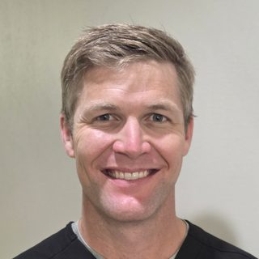

A toothache, a broken tooth or a lost crown can’t always wait for your next checkup. If you have a dental emergency, call our office at 828-684-3839 and we’ll do our best to see you as quickly as possible.
We welcome both current and new patients with urgent dental needs. When you call, let us know what happened and how you’re feeling so we can help you right away.
Common Dental Emergencies We Treat
- Severe or throbbing toothache
- Chipped, cracked or broken tooth
- Knocked-out or loosened tooth
- Lost filling or crown
- Swelling or a painful bump on the gum
- Broken denture
- Injury to the teeth or mouth
What to Do Until You Can See Us
Toothache
Rinse with warm water and gently floss to remove anything caught between your teeth. A cold compress on the outside of your cheek can ease discomfort. Don’t put aspirin directly on your gums.
Chipped or Broken Tooth
Save any pieces, rinse your mouth with warm water and apply a cold compress to reduce swelling. Call us right away.
Knocked-Out Tooth
Pick the tooth up by the crown (the part you chew with), not the root. If it’s dirty, rinse it briefly without scrubbing. If you can, gently place it back in its socket; otherwise keep it in milk. Call us immediately — the sooner it’s treated, the better the chance of saving it.
Lost Filling or Crown
Keep the crown if you have it and bring it with you. Avoid chewing on that side until we can see you.
Swelling or Infection
Swelling can be a sign of an infection that needs prompt treatment, often with a root canal or an extraction. Call us as soon as possible.
When to Go to the Emergency Room
Go to the nearest emergency room or call 911 if you have swelling that affects your breathing or swallowing, bleeding that won’t stop, a possible broken jaw, or a serious injury to your head or face. If our office is closed and you have severe swelling or a fever, don’t wait — seek emergency medical care.
What Happens When You Call
Call us
Call 828-684-3839 and tell us what happened.
Get advice
We’ll let you know what to do right away and when we can see you.
Exam & X-rays
Dr. Holcombe finds the cause of the problem.
Relief
We relieve your pain and treat the problem, or stabilize it and plan the next step.
Preventing Dental Emergencies
- Keep up with regular checkups so small problems are found before they become painful.
- Wear a mouthguard for sports, and ask about a night guard if you grind your teeth.
- Don’t chew ice, hard candy or pens, or use your teeth to open packages.
- Fix cracked teeth and worn fillings early — a crown can protect a weak tooth before it breaks.

Why Patients Choose Dr. Holcombe for Emergency Dentistry
- Doctor of Dental Medicine (DMD) from East Carolina University; undergraduate studies at North Carolina State University
- Active member of the American Dental Association, Academy of General Dentistry, North Carolina Dental Society and Buncombe County Dental Society
- A small, family-owned practice where you see the same dentist every visit, led by Dr. Holcombe since 2018
- Personal care and long-term relationships: we take the time to listen, answer questions and explain your options
Emergency Dentistry: Frequently Asked Questions
Do you see emergency patients who aren’t current patients?
Yes. New patients with urgent dental problems are welcome. Call our office and we’ll do our best to see you as quickly as possible.
What are your hours for emergencies?
Our office is open Monday through Thursday, 8:00am to 5:00pm. Call as early in the day as you can. If we’re closed and you have severe swelling, trouble breathing or swallowing, or uncontrolled bleeding, go to the nearest emergency room.
Is a toothache an emergency?
A toothache that is severe, lasts more than a day or two, or comes with swelling or fever should be checked as soon as possible. It can be a sign of infection.
What should I do with a knocked-out tooth?
Handle it by the crown, not the root, rinse it briefly if it’s dirty, and try to place it back in the socket or keep it in milk. Call us right away — time matters.
My crown came off. Is that an emergency?
It’s not usually dangerous, but the tooth underneath can be sensitive and may break. Keep the crown and call us so we can recement or replace it. Learn more about crowns.